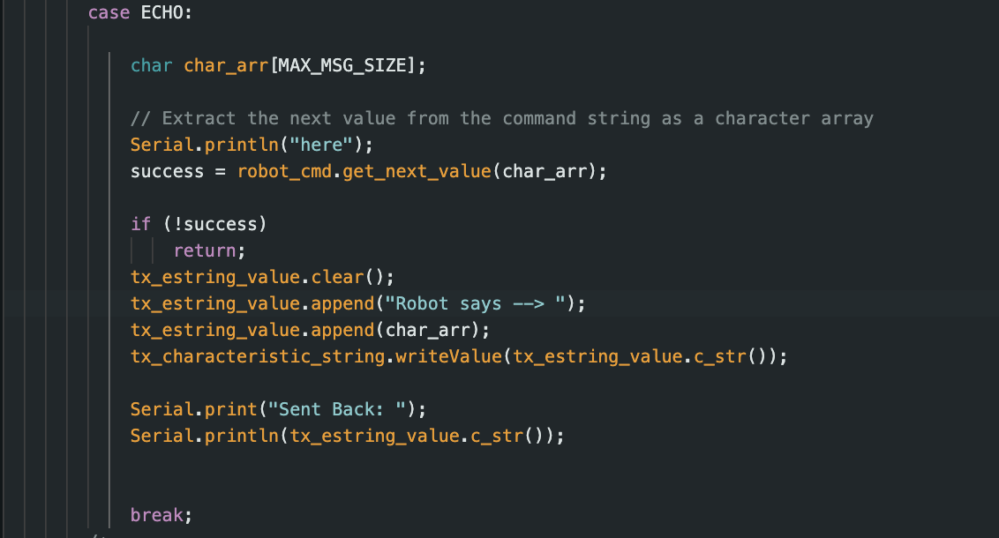

Overview of Lab 1 and 2
The focus of lab 1 and 2 was to connect the Artemis to the computer and test out its basic functions, such as blinking, temperature sensing, and sound detection. Additionally, the lab focused on connecting the Artemis to bluetooth and passing information from a python script to the microcontroller and back.
Example 1: Blinking Lights
The goal of this example was to have the LED on the Artemis blink using started code.
Example 2: Printing to Serial
In this example, the goal was to print the serial monitor. First, the Artemis sent out a counting test to the serial monitor. Then it prompted the user for an input text and printed the text to the serial monitor.
Example 3: Analog Read
In this example, the goal was to read sensor data from the Artemis, spcifically the teamperature data, and print it to the serial monitor.
Example 5: Microphone Output
The goal of this example was to measure the frequeny of sound measured by the Artemis and print it to the serial monitor.
Bluetooth Connectivity: Connecting the Artemis
To connect the Arduino to bluetooth, we first had to install an arduino starter script. We also downloaded a python script and setup a jupiterlab virtual environment. The goal of this section was to communicate to teh Artemis through bluetooth and have the artemis communicate back as well.
Setting Up Artemis MAC Address and Generating a UUID
The first step to connect the Artemis to Bluetooth was to add the artemis address to the python .yaml file. The next step was to generate a UUID or Universally Unique Identifier. The UUID is useful in establishing a unique identifier for different types of communication or different types of data.
Working with the ECHO Command
To communicate between the computer and the Artemis, a series of commands were made that activate blocks of code on the Artemis. The first command was the ECHO command which sends a string to the Artemis and has the Artemis send the string back.

Get Time Millis Command
This section focused on getting the time in milliseconds since the Artemis started running.
Creating a Notification Handler
To handle more incomming data from the Artemis, a notification handler was built. Connecting this notification to a modified version of GET_TIME_MILLIS allows the Artemis to send a stream of millisecond data to the computer. However, because the computor cannot read the data fast enough, not all of it is captured. To account for this, the millis data is gathered first and then sent to the Artemis.
Getting Temp Data
Similarly to how millis data was gathered, temperature data is also gathered. This data is appended onto the millis data to capture the temperature at a given moment of operation. The python script parses the incoming string and extracts the time and temperature data into two seperate arrays.
Contrasting the Two Methods of Data Acquisition
Directly sending data and to the computer every cycle and gathering it first before sending it proved to have different benefits. While immediately sending data allows the computer to get it in real time, the data has a large time interval. This makes it difficult to do calculations that require precise data or handle rapidly changing data sets. Meanwhile, gathering data first and then sending it allows the Artemis to gather small interval measurements. However, the data cannot be sent as soon as it is read, meaning completely live calculations cannot be computed. The best soution is likely a combination of the two methods of data acquisition. Gathering small amounts of data and sending them allows relatively real-time calculations with little lag.